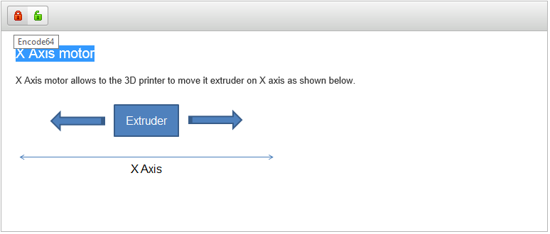
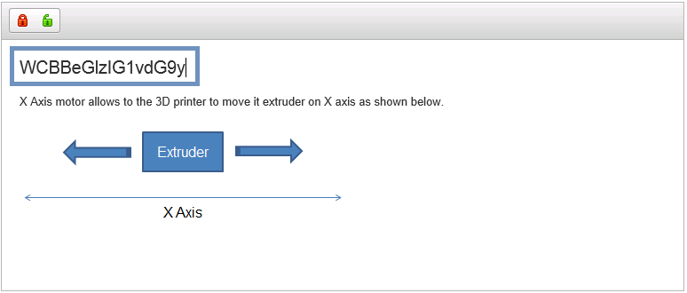
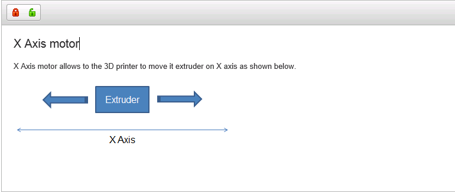

Throw a simple use case, this page describes how to add custom items (i.e., tools) to the toolbar.
The use case is intend to create a MDE Rich Text with one toolbar group which contains two items. The first item encode the selected characters with Base64 encoder, and the second decode the selected characters
The first step is to declare the toolbar group with its two items encode64 and decode64 in the configuration of the editor
MDENebulaRichTextConfiguration configuration = new MDENebulaRichTextConfiguration();
configuration.initializeToolbarItem("EncodeToolbarGroup", "encode64", "decode64");
The second step is to add the buttons and their handlers to the widget.
This is Nebula specific feature which is an inheritance from CKEditor. Then, The widget must be casted to org.polarsys.kitalpha.richtext.nebula.widget.MDENebulaBasedRichTextWidget which provides the right services to do that.
Once the widget is casted, org.polarsys.kitalpha.richtext.nebula.widget.MDENebulaBasedRichTextWidget#addToolbarItem(String name, String command, String label, String toolbar, URL iconPath, MDERichTextToolbarItemHandler handler) service is used.
NB: Refers to API References for more information about MDERichTextHelper and how to retrieve URL of icon in Eclipse
For encoding here how to add the Encode item to the toolbar
...
((MDENebulaBasedRichTextWidget)richtextWidget).addToolbarItem("encode64", "encode64", "Encode64", "EncodeToolbarGroup", MDERichTextHelper.getURL("org.eclipse.emf.diffmerge.ui", "icons/full/lock_closed.gif"), new MDERichTextToolbarItemHandler() {
@Override
public void execute(MDERichTextWidget richText) {
String selectedText = richText.getSelectedText();
if (selectedText != null && !selectedText.isEmpty()){
byte[] encoded = Base64.getEncoder().encode(selectedText.getBytes());
String s = new String(encoded);
richText.insertText(s);
}
}
});
...
And for Decode item:
...
(MDENebulaBasedRichTextWidget)richtextWidget).addToolbarItem("decode64", "decode64", "Decode64", "EncodeToolbarGroup", MDERichTextHelper.getURL("org.eclipse.emf.diffmerge.ui", "icons/full/lock_open.gif"), new MDERichTextToolbarItemHandler() {
@Override
public void execute(MDERichTextWidget richText) {
String selectedText = richText.getSelectedText();
if (selectedText != null && !selectedText.isEmpty()){
byte[] decoded = Base64.getDecoder().decode(selectedText.getBytes());
String s = new String(decoded);
richText.insertText(s);
}
}
});
...
The result before encoding:

The result after enoding:

the result after decoding:

NB: Base64 class is available in Java 1.8